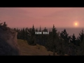

| Ranní rosa | |||
| Autor : Ježuro | |||
| Ostrov : Kolgujev | |||
| Velikost : 1460 kb | |||
| Hodnocení | |||
| RP | Veřejné | Hlasováno | Staženo |
| 10/10 | 9/10 | 18x | 502x |
| Zobrazit autorův popis mise | |||
| Stáhnout tuto misi | |||
| Zpět na SP mise | |||

Na tuto misi jsem se těšil hodně dlouho. Bohužel, nebylo mi
souzeno si tuto misi zahrát. Při načtení mise mi z nepochopitelných
důvodů spadne OFP. Nevím proč, ale mooooc mě to mrzí. Dokonce jsem kvůli
tomu přeinstaloval OFP, ale jelikož je to systémová chyba, tak nemusíte
mít strach, že vám to nepůjde a rozhodně ji vyzkoušejte a hodnoťte.  Ježuro mi pár dní po vydání poslal patch na RR, takže si ho můžete stáhnout tady: Patch RR Didymos Tak jak Didy předeslal, tak to i je. Tato mise je prostě super. Skvělý dabing, velmi pěkná akce skládající se z několika částí, možnost zvolit si zbraně pro celou skupinu, bezchybný chod.... no prostě tato mise je přesně to za co dávám známku nejvyšší  . .Ruprt |